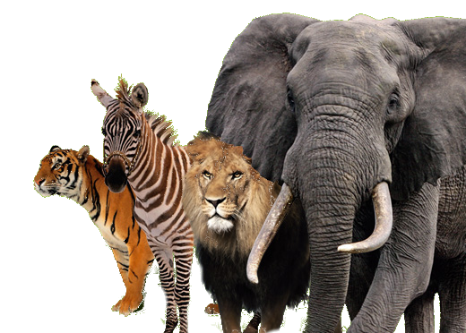

Animaliak
Animaliak izaki bizidunen talde handi bat dira, Animalia edo Metazoa erreinuetan kokatzen direnak. Orokorrean zelulanitzak dira, higitzeko gai dira bere inguruarekin elkarrekintza edukitzeko eta beste izaki batzuk kontsumituz elikatzen dira. Animalia gehienek forma bera mantentzen dute euren bizitzan zehar, nahiz eta batzuek metamorfosia jasaten duten.
Animalia hitza latineko animal hitzetik eratorria da, pluralean animalia dena eta anima hitzetik (hau da gure arima hitzaren parekidea) datorrena.